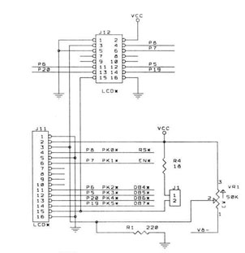
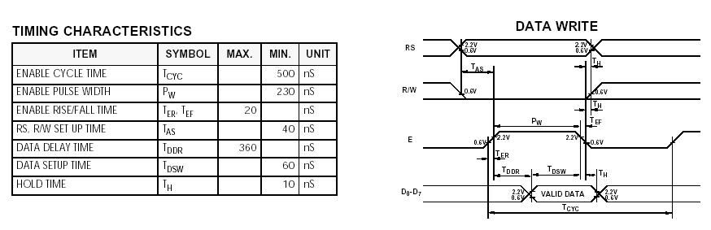
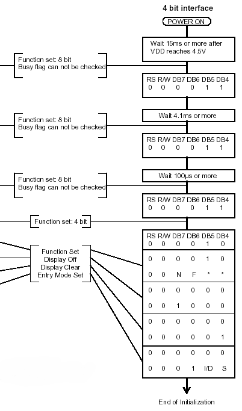
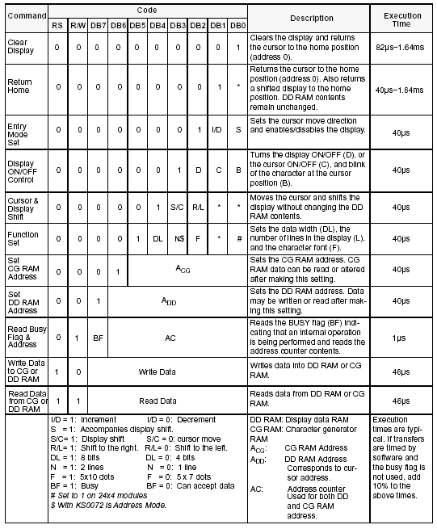

| Previous Appendix | Next Appendix | Index | Search the Text |
The goal of this project is to build a frequency meter using the Dragon12-Plus development board. The design is based mainly on components discussed previously in this text:
The final program is available here. The remainder of this section will cover the new parts of the design. Refer to the sections linked above for operation of the frequency measurements, value to digit conversion, and making the application stand-alone. The normally idle process is used to convert the measurement to characters and send to the LCD display output buffer. This is a low priority task here - the only thing that is important is that it completes a conversion every second. A flag is used (doneflag)so that it doesn't convert the same measurement more than once. The sections of this example are:
The interface to the LCD involves 4 data lines (there are two transfers per byte of information), a strobe signal (EN), and command/data select signal (RS - high for data).

These connect to pins PK0 through PK5. While the LCD display has read-back capability, none is supported by the interface. As far as the microcontroller initialization is concerned, all that is needed is:
movb #$ff DDRK ; port K = output
clr PORTK
However the LCD display will require an initialization sequence.
The timing diagram for the LCD display from the Hantronix data sheet is:

All the times are sufficiently long (as far as the microcontroller is concerned) that we don't have to worry about most of them. Basically we will drive RS and the data pins to their correct values, then assert E. Then we de-assert E. Enable must be high for at least 230nS. That's our only concern, so a delay can be used to meet that requirement. Assuming the nibble (4 bit value) to write is in accumulator A in the correct bit positions (2 through 5) and RS has been correctly set, the following subroutine will write the data and perform the necessary pulsing of E:
lcdnibble: ; nibble to send is in a
psha ; save nibble value
ldaa PORTK ; get LCD port value
anda #$03 ; need low 2 bits, so they won't change
oraa 1,sp+ ; OR in low 4 bits
staa PORTK ; output data
bset PORTK #ENABLE ; ENABLE=high
nop
nop ; make pulse 250nsec wide
bclr PORTK #ENABLE ; ENABLE=low
rts
The two nop instructions insure the enable pulse will be 250nS wide with a 24MHz system clock.

The LCD display is initialized with the sequence of commands shown above from the data sheet. We will actually initialize to a slightly different configuration. Note that there are occasions where additional wait time is necessary between commands. Normally the delay is 50 microseconds, except for clearing the display which can take 1.5 milliseconds. In addition, we have to wait 15 milliseconds before even starting any execution. To provide these delays without otherwise slowing down the program we will use a state machine driven by the 1 millisecond interrupt we use for the frequency measurement. Lets also look at the output buffering which allows the program to write multiple characters and proceed with other processing.
The LCD state machine and buffered interface has the following data declarations:
lcdbuf: ds LCDBUFLEN ; LCD output buffer lcdbufin: ds 2 ; Pointer to buffer input lcdbufout: ds 2 ; pointer to buffer output lcdstate: ds 2 ; LCD state machine state lcddelay: ds 1 ; LCD state machine delay counter
The buffer pointers are initialized to the start of lcdbuf, the state is initialized to LCDCLEARDELAY and the delay is initialized to 14. There will be more information about the state machine later. The code to write a character is taken directly from the buffering discussion in the text. This routine is renamed from putchar to putlcd:
putlcd: ; Write character in register A to LCD
pshx
tfr d x ; save A:B in X, X on stack
putlcd2: ldd lcdbufin ; calculate # characters in buffer
subd lcdbufout
bpl putlcd3
addd #LCDBUFLEN ; If negative, adjust (circular arithmetic)
putlcd3: cpd #LCDBUFLEN-1 ; Is there room?
bne putlcd4
wai ; no room -- wait and try again
bra putlcd2
putlcd4: tfr x d ; a has character
ldx lcdbufin ; get bufin again
staa 1,x+ ; store character, increment buffer position
cpx #lcdbuf+LCDBUFLEN ; check for wrap
bne putlcd5 ; not needed?
ldx #lcdbuf ; wrap to start
putlcd5: stx lcdbufin ; save new bufin value
pulx
rts
How do we know the difference between a command byte and a data byte (which are the characters we want to write)? We will putlcd a $ff byte to indicate that the following byte is a command byte. Without this prefix, the byte will be a data byte. This precludes the use of character $ff, but that is no problem. Now we can write a routine which writes to the first line of the display (the source code shows routines for both the first and second lines):
lcd_line1: ; write the character string at X, B characters long, to the first line
ldaa #$ff ; indicate instruction
bsr putlcd
ldaa #$80 ; starting address for the line1
bsr putlcd
pshy
tfr b,y
msg_out:
ldaa 1,x+
bsr putlcd
dbne y msg_out
puly
rts
The command $80 initiates a data write to the first line of the display. The list of commands is on the data sheet for the display:

To perform initialization (which must be done after interrupts are enabled so the state machine will run), we will execute the following code:
lcd_ini:
ldx #inidsp
ldab #6
lcd_ini_loop:
ldaa #$ff ; $ff means following byte is command
jsr putlcd
ldaa 1,X+
jsr putlcd
dbne b lcd_ini_loop
rts
inidsp:
fcb $33 ; reset (4 nibble sequence)
fcb $32 ; reset
fcb $28 ; 4bit, 2 line, 5X7 dot
fcb $06 ; cursor increment, disable display shift
fcb $0c ; display on, cursor off, no blinking
fcb $01 ; clear display memory, set cursor to home pos
We must take care of all delays in the state machine.
The state machine has 4 states, LCDIDLE, LCDCLEARDELAY, LCDRESETDELAY, and LCDCMD. The state machine code executes at the end of the 1 millisecond interrupt routine which is used for the frequency counter. We have seen that initially the state is LCDCLEARDELAY with a counter value of 14. Here is the code for this state:
lcdfin: rti
LCDCLEARDELAY: ; waiting on clear delay
dec lcddelay
bne lcdfin
movw #LCDIDLE lcdstate
rti
We will be in this state for 14 interrupts, and then the state will change to LCDIDLE. 15 interrupts will occur (15 milliseconds) before actual command processing can begin. This supplies the initial startup delay.
The LCDIDLE state is the main state of the machine. This is the state that checks for a character in the buffer. If there is no character, it is finished, and will check again in the next millisecond interrupt. Otherwise it will start processing the character. Here is the start of the state code that checks the buffer. This is basically the code used in the previous buffering example:
LCDIDLE: ; Wait for next character
ldx lcdbufout
cpx lcdbufin
beq lcdfin
ldaa 1,x+
cpx #lcdbuf+LCDBUFLEN
bne lcdin2
ldx #lcdbuf
lcdin2: stx lcdbufout
If the byte is the command prefix, then we change to the LCDCMD state and start processing in that state right away (no reason to wait for the next interrupt), otherwise we write out the data byte as two separate nibbles. When we are done, we return from the interrupt. Since the next interrupt is 1 millisecond away, the delay requirements between bytes are easily met.
cmpa #-1
beq iscmd
psha ; save temporarily
anda #$f0 ; mask out 4 low bits.
lsra
lsra ; 4 MSB bits go to pk2-pk5
bsr lcdnibble
pula
lsla ; move low bits over.
lsla
bsr lcdnibble
lcdfin: rti
iscmd: movw #LCDCMD lcdstate
LCDCMD: ...
One would expect that the LCDCMD state would be the same as the LCDIDLE state but for clearing the REG_SEL bit. Again, we must fetch the byte from the buffer. However we must have a 5 millisecond delay between nibbles when executing the reset command, and a 2 millisecond delay after a clear command. The other commands execute fast enough that the delay between interrupts is sufficient. In any case, after sending out the command we want to end up back in the LCDIDLE state.
LCDCMD: ; Wait for command
ldx lcdbufout
cpx lcdbufin
beq lcdfin
ldaa 1,x+
cpx #lcdbuf+LCDBUFLEN
bne lcdcin2
ldx #lcdbuf
lcdcin2: stx lcdbufout
psha ; save the command
bclr PORTK #REG_SEL ; select instruction
anda #$f0 ; mask out 4 low bits.
lsra
lsra ; 4 MSB bits go to pk2-pk5
bsr lcdnibble
pula
cmpa #$33 ; Reset requires a 5msec delay
beq lcdreset
psha
lsla ; move low bits over.
lsla
bsr lcdnibble
bset PORTK #REG_SEL ; select data
pula
cmpa #$03 ; clear requires 5 msec delay
bls lcdclear
movw #LCDIDLE lcdstate
rti
When the clear command occurs, after the command is sent, the state is changed to LCDCLEARDELAY to delay before the next command.
lcdclear: movw #LCDCLEARDELAY lcdstate ; must delay before next command
movb #1 lcddelay ; gives 2 msec delay (one more than value)
rti
In the case of the reset command, after the first nibble is sent we branch to lcdreset:
lcdreset: movw #LCDRESETDELAY lcdstate ; must delay before second part
movb #5 lcddelay ; gives 5 msec delay
rti
This sets the state to LCDRESETDELAY and sets the lcddelay time variable for a 5 millisecond delay. The LCDRESETDELAY state is:
LCDRESETDELAY: ; waiting on reset delay
dec lcddelay
bne lcdfin
ldaa #$0c ; reset lower nibble shifted left
bsr lcdnibble
bset PORTK #REG_SEL ; select data
movw #LCDIDLE lcdstate
rti
Which sends out the second nibble of the command and returns to the idle state.
Since the application is stand-alone, the first step in initialization is setting the stack pointer and configuring the general microcontroller hardware. In this case we need to enable the PLL to run at 24 MHz rather than the 2 MHz we would otherwise get from the 4 MHz crystal. The remainder of the initialization code must combine that of the buffered interface and the frequency measurement example. The order of execution here is not important as long as the cli instruction is executed after all the initialization (except for the LCD initialization routine) is complete. Look at the source code for the example. Because of the large number of processor instructions necessary to initialize (33) it has been split into groups of instructions with comments indicating what is being initialized.
The main process checks for a new value to display and loops, doing nothing, until there is a value. This doesn't hurt anything since all time sensitive operations are done in higher priority interrupt routines. When a new value exists (as indicated by doneflg being nonzero, which is set by the interrupt routine when a new measurement is complete) the flag is cleared and the value checked for being non-zero.
back: tst doneflg
beq back
clr doneflg
movw frequency saved
movw frequency+2 saved+2
ldaa saved ; Are all bits 0?
oraa saved+1
oraa saved+2
oraa saved+3
beq nomeasure ; then there is no measurement
In the case the frequency is zero, a special message is printed, and the main process goes back to waiting for a new measurement.
nomeasure: ; display text that there is no signal
ldx #nomeas
ldab #10
jsr lcd_line1
jmp back
nomeas: fcc 'No Signal '
Otherwise the frequency value is converted to a string. Seven digits are allowed, so that frequencies up to less than 10 MHz can be displayed. This is fine since the hardware can't measure frequencies as high as 10 MHz. Some future microcontroller might require changing the number of digits to eight or more! Since the algorithm for converting a value to digits requires repeated dividing by 10, we need to accommodate both a 32 bit dividend and a 32 bit quotient. This is accomplished by performing a sequence of two divisions. The code to do this is:
ldy #result+6 ; Convert to 7 digit frequency string
loop: pshy
ldd saved ; divide 32 bit value at saved by 10, storing
ldx #10 ; quotient back in saved and keeping remainder
idiv ; division of upper 16 bits, d has remainder, x has quotient
stx saved
tfr d y ; prepare for second divide
ldd saved+2
ldx #10
ediv ; quotient in y, remainder in D
sty saved+2
addb #'0 ; convert remainder to ASCII digit
puly
stab 1,y- ; put digit in character array
ldd saved ; see if quotient is zero -- if not, continue converting
bne loop
ldd saved+2
bne loop
This will convert all significant digits. The remaining digits positions are filled with blank (non-displaying) characters:
cpy #result ; blank fill leading characters
blo done
again: movb #' 1,y-
cpy #result
bhs again
Then the value is displayed by calling lcd_line1, and the process goes back to waiting for the next value.
done: ldx #result ; display frequency text
ldab #TEXTLEN
jsr lcd_line1
jmp back
Continue with Alarm Clock Example
Return to the Index.